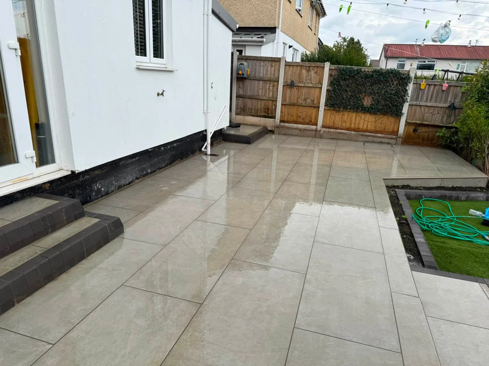

WYTHENSHAWE & SURROUNDING AREAS
Our work.
See the details.
Browse completed gardens, driveways and fences, plus tree work and site preparation.
PROJECT GALLERY
Our project gallery.
PROJECT VIDEOS
See the team at work.
Watch two clips from Manchester Tree and Landscapes Ltd.
See all project photos →REQUEST A QUOTE
Tell us about your project.
Include your postcode and a few details. The form opens WhatsApp with a draft ready for you to send. You can attach photos there.